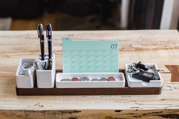

← Anterior
jemand, niemand & welcher
Siguiente →
Wortbildung


Hace dos años, desde enero, dentro de una semana, a partir del lunes, el 3 de mayo: para citas, trámites y plazos tienes que decir cuándo con precisión. Aquí están las preposiciones de tiempo y cómo decir las fechas.
| Preposición | Español | Ejemplo |
|---|---|---|
| am + día o fecha | el… | Am Montag habe ich frei. |
| am + parte del día | en la… | Am Abend lerne ich. |
| um + hora | a las… | Der Kurs beginnt um 18 Uhr. |
| im + mes o estación | en… | Im Mai fliege ich nach Berlin. |
| vor + Dativ | hace… | Ich habe vor zwei Jahren angefangen. |
| seit + Dativ | desde hace… (y sigue) | Ich lerne seit einem Jahr Deutsch. |
| in + Dativ | dentro de… | In einer Woche habe ich die Prüfung. |
| nach + Dativ | después de… | Nach dem Kurs gehen wir essen. |
| ab | a partir de… | Ab Montag arbeite ich von zu Hause. |
| bis | hasta… | Das Büro ist bis 16 Uhr offen. |
| von … bis … | de… a… | Ich arbeite von 8 bis 17 Uhr. |
| für | por (un tiempo planeado) | Ich fahre für zwei Wochen nach Spanien. |
| zwischen | entre | Kommen Sie zwischen 9 und 10 Uhr. |
| Escrito | Se dice | Para |
|---|---|---|
| Heute ist der 3. Mai. | der dritte Mai | ¿qué día es hoy? |
| am 3. Mai | am dritten Mai | cuándo pasa algo |
| vom 10. bis 14. Juli | vom zehnten bis vierzehnten Juli | un periodo |
| am 1. / 3. / 7. | am ersten / dritten / siebten | los irregulares |
| am 20. / 21. | am zwanzigsten / einundzwanzigsten | desde el 20, -sten |
| 03.05.2027 | día, mes y año, en ese orden | en formularios |
| 2028 | zweitausendachtundzwanzig | el año |
| Alemán | Español | Ejemplo |
|---|---|---|
| täglich / jeden Tag | diario | Ich lerne täglich 20 Minuten. |
| jede Woche | cada semana | Wir treffen uns jede Woche. |
| montags | los lunes | Montags gehe ich ins Fitnessstudio. |
| morgens / abends | en las mañanas / en las noches | Abends lese ich. |
| zweimal pro Woche | dos veces por semana | Der Kurs ist zweimal pro Woche. |
| eine Stunde lang | durante una hora | Ich habe eine Stunde lang gewartet. |
| pünktlich / rechtzeitig | puntual / a tiempo | Bitte kommen Sie pünktlich. |
| spätestens / frühestens | a más tardar / no antes de | Spätestens am Freitag brauche ich die Unterlagen. |